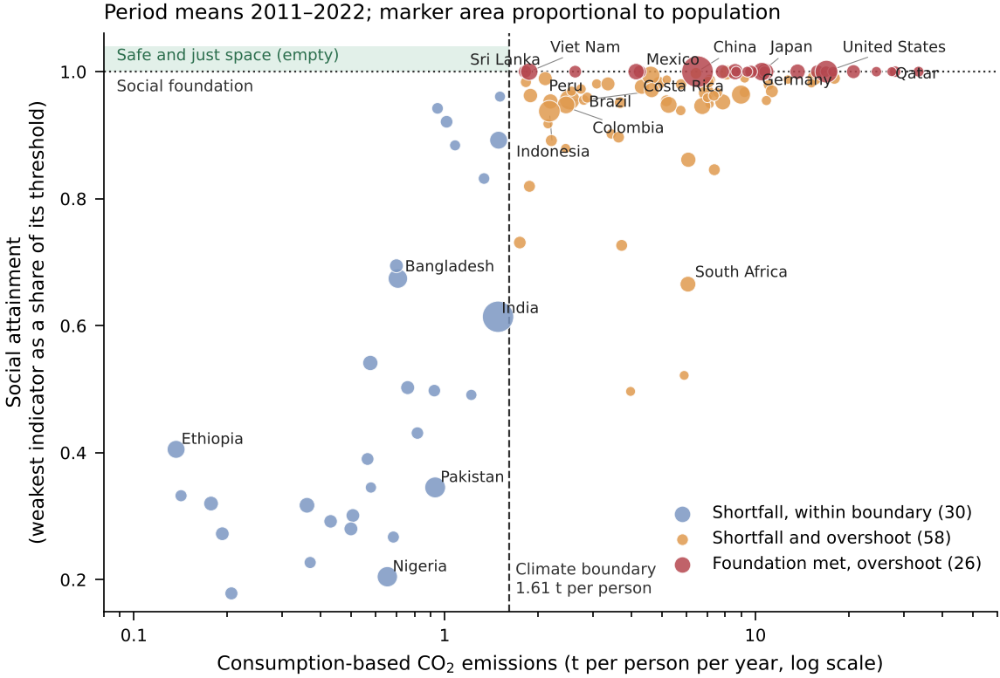
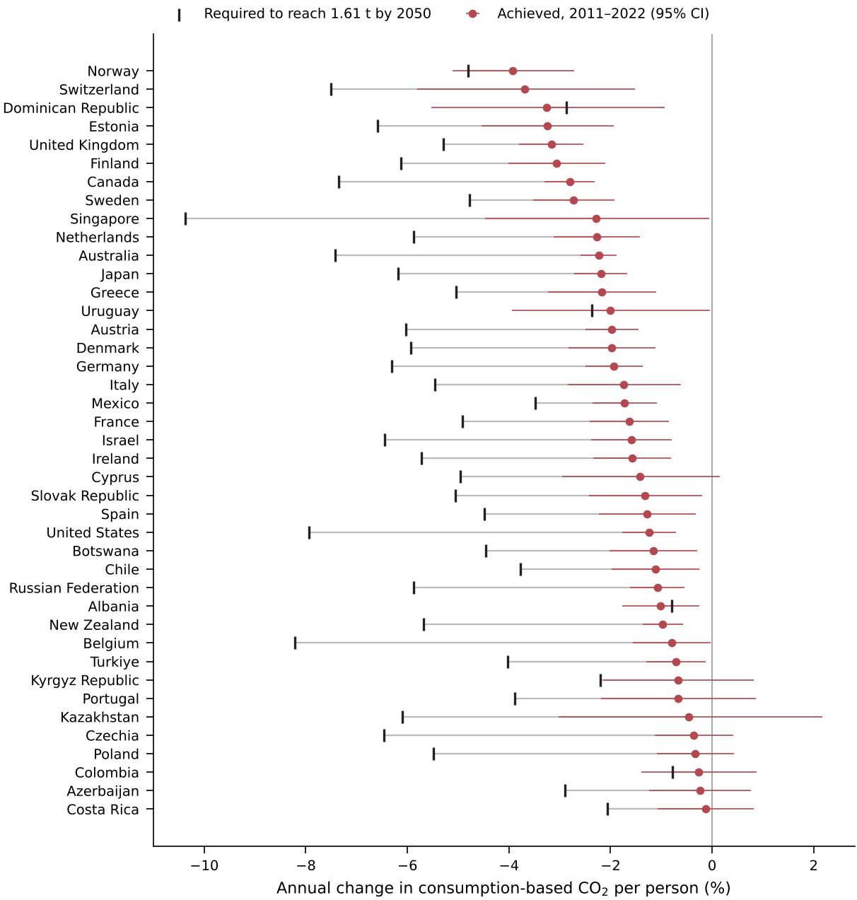
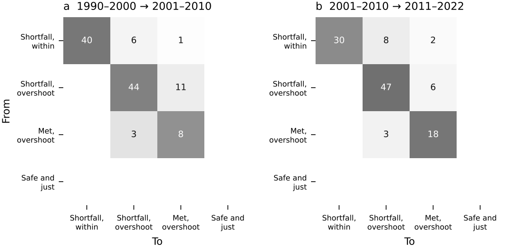

Social shortfall, climate overshoot and the falling carbon cost of development
Can countries meet the basic needs of their people while staying within a fair per-person share of the climate boundary? Explore the evidence country by country and year by year.
The framework
Every country-year is judged on two criteria. Social foundation: life expectancy ≥ 74 years, under-5 mortality ≤ 25 per 1,000, electricity access ≥ 95% and employment ≥ 94% of the labour force. Climate boundary: consumption-based CO2 ≤ 1.61 t per person (equal share of the 2 °C budget). Together they give four configurations.
What the evidence shows
- No safe and just space. Among the 114 countries with consumption-based estimates, none met all four thresholds while emitting within the boundary. All 36 that crossed the social foundation did so while overshooting (30 of 30 under a three-year sustained definition).
- Accounting matters. With production-based emissions (155 countries), only Costa Rica and Sri Lanka appear safe and just, in 12 country-years, and both exceed the boundary once emissions embodied in imports are counted.
- Development is getting cheaper in carbon. The CO2 per person at which half of countries meet the foundation fell 3.6% a year, from ~26 t to 8.5 t; for the health thresholds alone it fell to 2.6 t.
- But not fast enough. Absolute decoupling spread from 24 countries (2001–2010) to 48 of 114 (2011–2022), yet the median cut among decouplers above the boundary was 1.6% a year against 5.5% required.
- Configurations are sticky. Most countries stayed in their configuration between periods, and no country moved into the safe and just space.
Methods in brief
A country-year panel (155 countries, population ≥ 1 million, 1990–2022) built from World Bank WDI, Our World in Data CO2 accounts and Maddison PPP income. Interior gaps up to three years are interpolated, never extrapolated. The carbon requirement is the 50% point of a yearly logistic fit of foundation attainment on log CO2 per person, with bootstrap confidence intervals. Decoupling compares trend growth of CO2 and GDP per person; the required rate is the constant annual cut that reaches 1.61 t by 2050.
Robustness
The level of the requirement depends on how the foundation is defined, but its decline and its position above the boundary hold in every specification.
| Specification | Countries | Requirement, last year (t) | Trend (% a year) |
|---|---|---|---|
| Main specification | 114 | 8.5 | -3.6% |
| Production-based CO₂ | 155 | 8.4 | -4.1% |
| Production-based, same countries | 114 | 7.5 | -4.3% |
| 1.5 °C boundary (0.79 t) | 114 | 8.5 | -3.6% |
| Within 5% of every threshold | 113 | 2.3 | -4.7% |
| Mean attainment ≥ 0.95 | 113 | 8.5 | -3.5% |
| Adding secondary enrolment (5) | 112 | 9.0 | -5.1% |
| Without employment (3) | 114 | 2.9 | -4.2% |
| No interpolation or gap filling | 114 | 8.4 | -3.6% |
Limits
One planetary boundary and four social indicators; equal-per-capita shares ignore historical responsibility; the requirement is a cross-country summary, not what any single country needs. All estimates are descriptive associations, not causal effects. The empty safe and just space depends on applying the thresholds strictly: with a 5% tolerance on each social threshold, El Salvador, Guatemala and Honduras reach it in 2022.
Original figures





